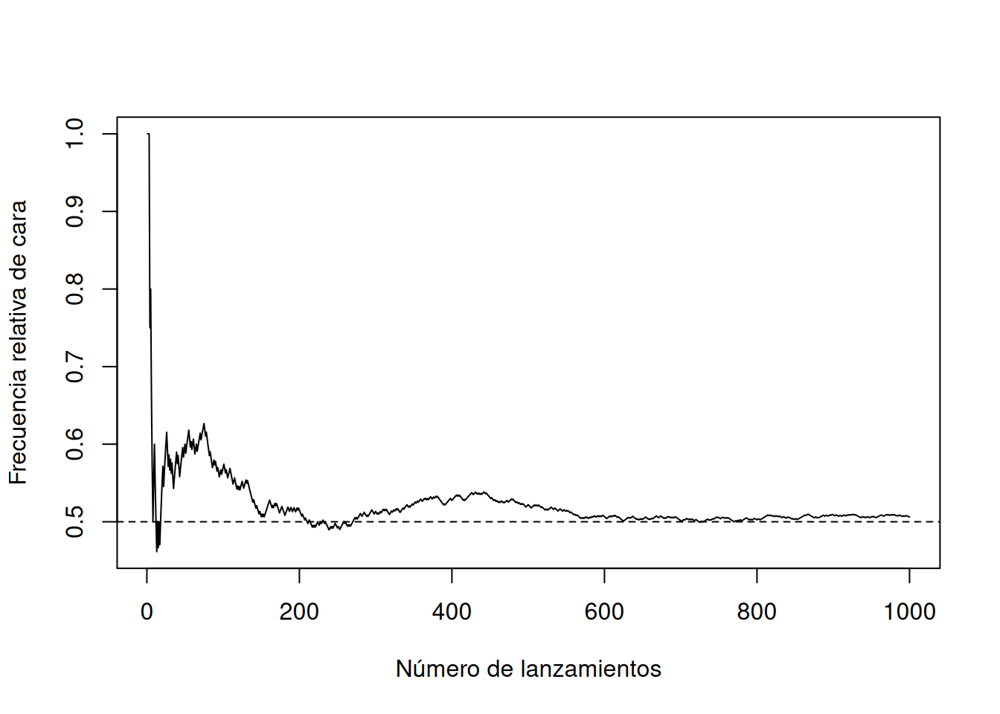

set.seed(123)
n <- 1000
lanzamientos <- sample(c("cara", "cruz"), n, replace = TRUE)
mean(lanzamientos == "cara")[1] 0.506Al finalizar este capítulo, el estudiante será capaz de distinguir fenómenos deterministas y aleatorios, reconocer la variabilidad como parte natural de los sistemas reales, describir experimentos aleatorios sencillos y utilizar simulación para aproximar probabilidades.
En un modelo determinista, unas mismas condiciones producen idealmente el mismo resultado. Sin embargo, muchos sistemas de ingeniería y ciencias contienen fuentes de variación no controladas. Por ello, aun repitiendo un procedimiento de manera semejante, los resultados pueden cambiar.
La probabilidad permite construir modelos matemáticos para esa variación. Un modelo probabilístico no pretende adivinar exactamente qué ocurrirá en una repetición particular; busca describir qué resultados son posibles y con qué grado de plausibilidad pueden presentarse.
Un experimento aleatorio es un procedimiento que puede producir resultados diferentes aun cuando se repita bajo condiciones esencialmente iguales.
Ejemplos:
La variabilidad puede provenir de ruido de medición, cambios ambientales, diferencias entre materiales, comportamiento humano o factores no observados. En ingeniería, ignorar esta variabilidad puede conducir a diseños poco confiables.
La idea central será:
modelar la incertidumbre en lugar de fingir que no existe.
Si un experimento se repite \(n\) veces y el evento \(A\) ocurre \(n_A\) veces, su frecuencia relativa es
\[ \widehat P_n(A)=\frac{n_A}{n}. \]
Cuando aumentamos el número de repeticiones, esta cantidad suele estabilizarse alrededor de un valor. Más adelante estudiaremos formalmente la relación entre esta observación y la Ley de los Grandes Números.
Simulemos lanzamientos de una moneda equilibrada.
set.seed(123)
n <- 1000
lanzamientos <- sample(c("cara", "cruz"), n, replace = TRUE)
mean(lanzamientos == "cara")[1] 0.506Podemos observar cómo evoluciona la frecuencia relativa:
frecuencia <- cumsum(lanzamientos == "cara") / seq_len(n)
plot(frecuencia, type = "l",
xlab = "Número de lanzamientos",
ylab = "Frecuencia relativa de cara")
abline(h = 0.5, lty = 2)
Este ejemplo muestra una idea que aparecerá una y otra vez: la simulación permite observar experimentalmente un resultado probabilístico antes de demostrarlo formalmente.
En la versión web construiremos experimentos interactivos que permitan comparar resultados observados con modelos teóricos. En el capítulo siguiente comenzaremos con diagramas de Venn y representación de eventos.
Supongamos que un sensor transmite correctamente un paquete con probabilidad aproximada de 0.98. Una sola transmisión no puede predecirse con certeza. Sin embargo, el modelo probabilístico permite analizar cuántos errores esperar, la probabilidad de varias fallas consecutivas y la confiabilidad global del sistema.
Este tipo de preguntas motivará el desarrollo de eventos, probabilidad condicional, variables aleatorias y distribuciones.
El desarrollo conceptual de este capítulo toma como referencia la organización y el enfoque aplicado de textos de probabilidad para ingeniería y ciencias, especialmente Walpole et al. (2012), Devore (2016), Montgomery y Runger (2018), Johnson (2018) y el enfoque computacional con R de Kerns (2010).